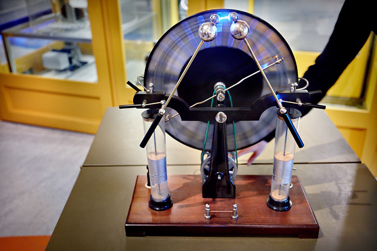
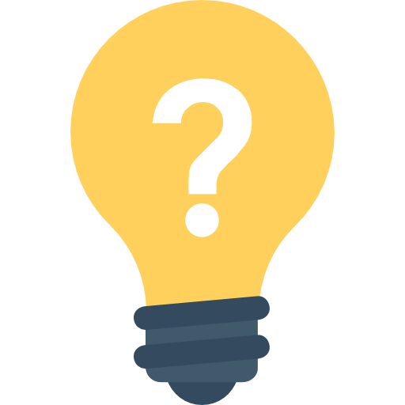
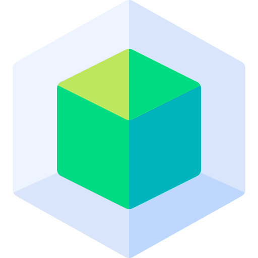
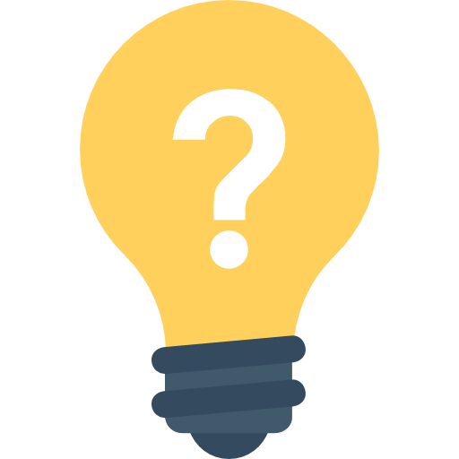
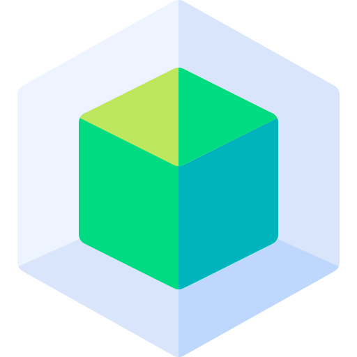

Door aan het handvat te draaien, draaien twee schijven langs
elkaar en creëren zo een statische lading. Deze wordt
overgebracht op de twee zogeheten Leidse flessen op de hoeken
van het apparaat. Dit zijn een soort simpele batterijen. Ze
absorberen lading totdat de spanning zo groot wordt dat er een
miniatuurbliksemschicht ontstaat tussen de twee metalen
bollen.
 


